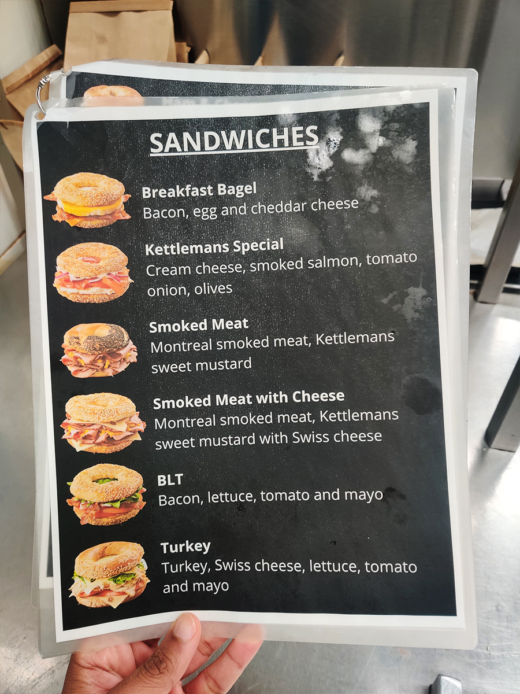
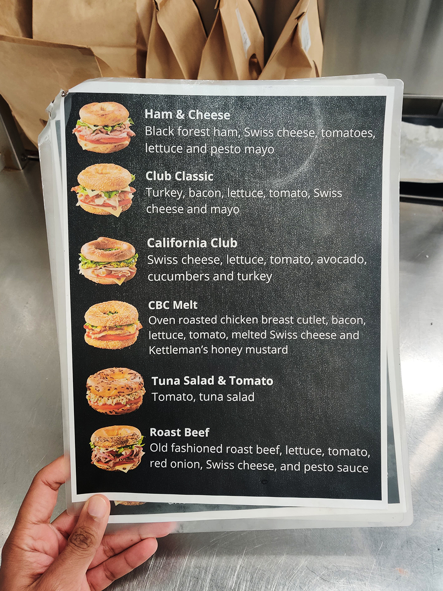
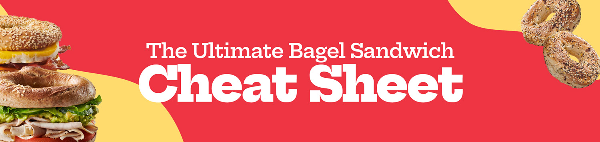
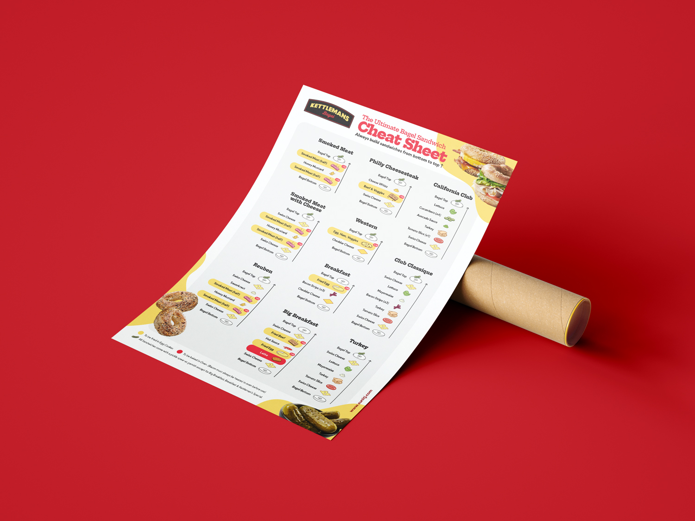
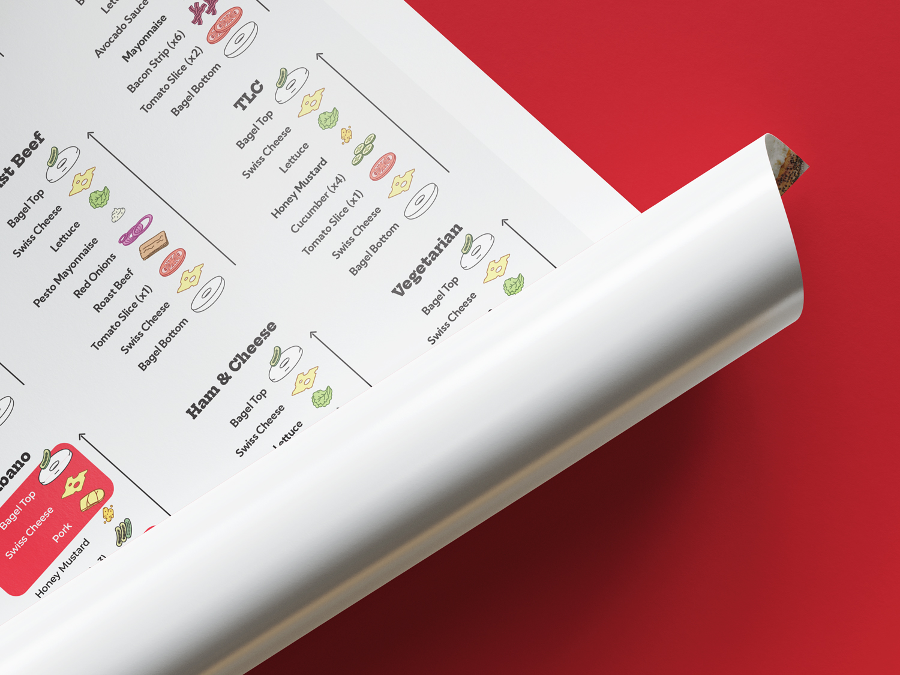
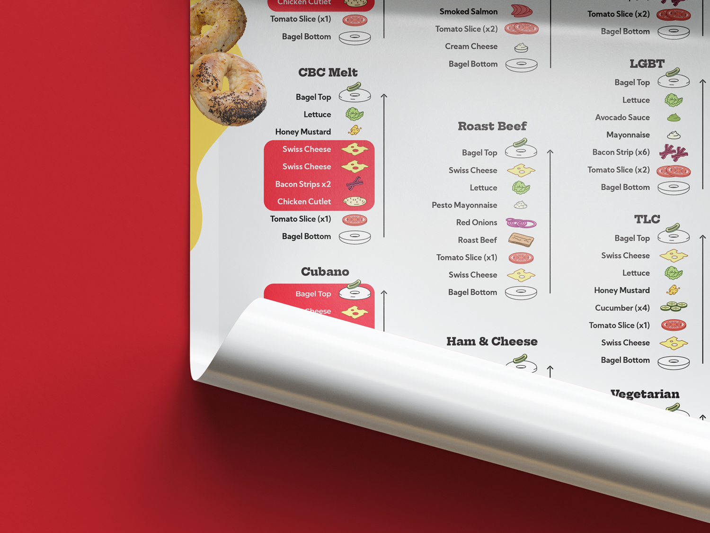
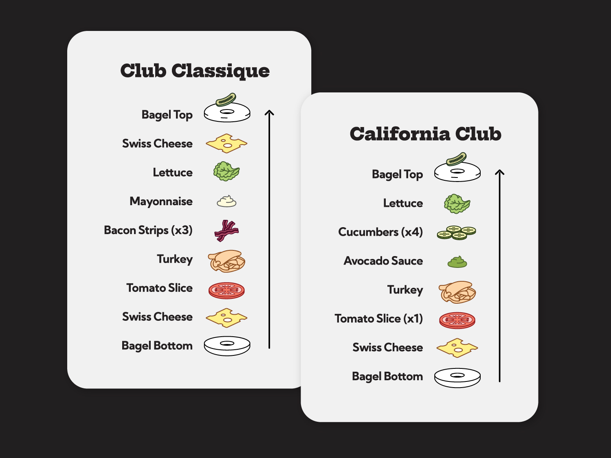
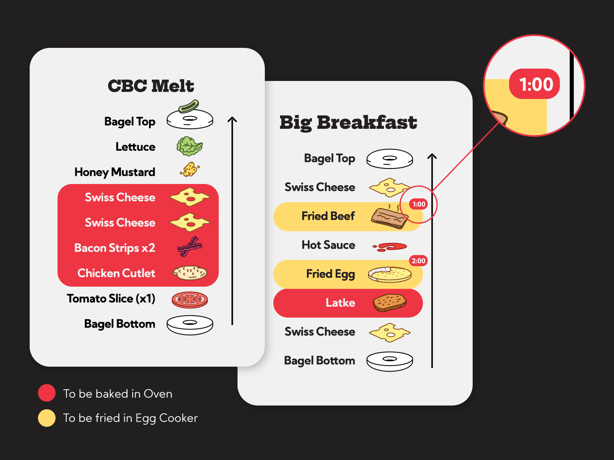
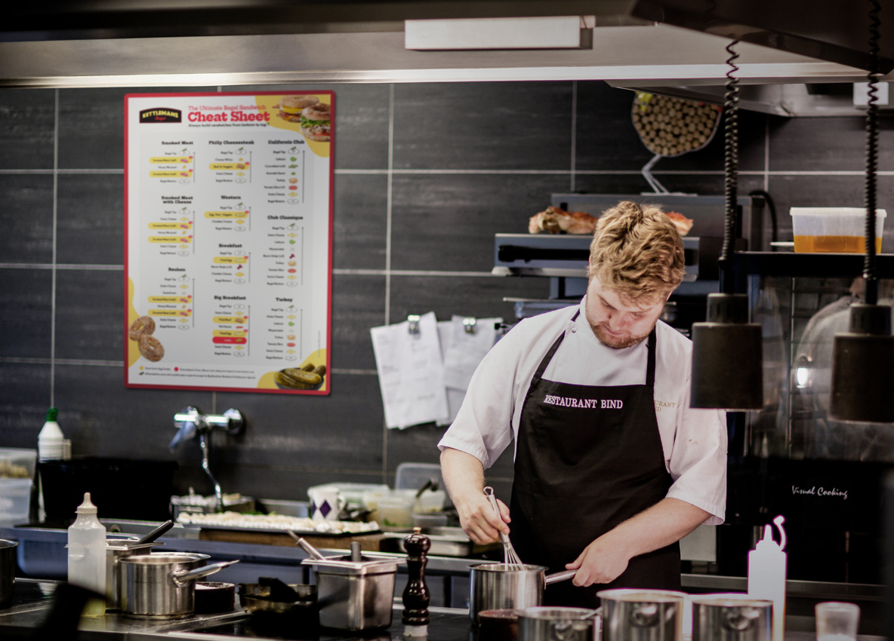
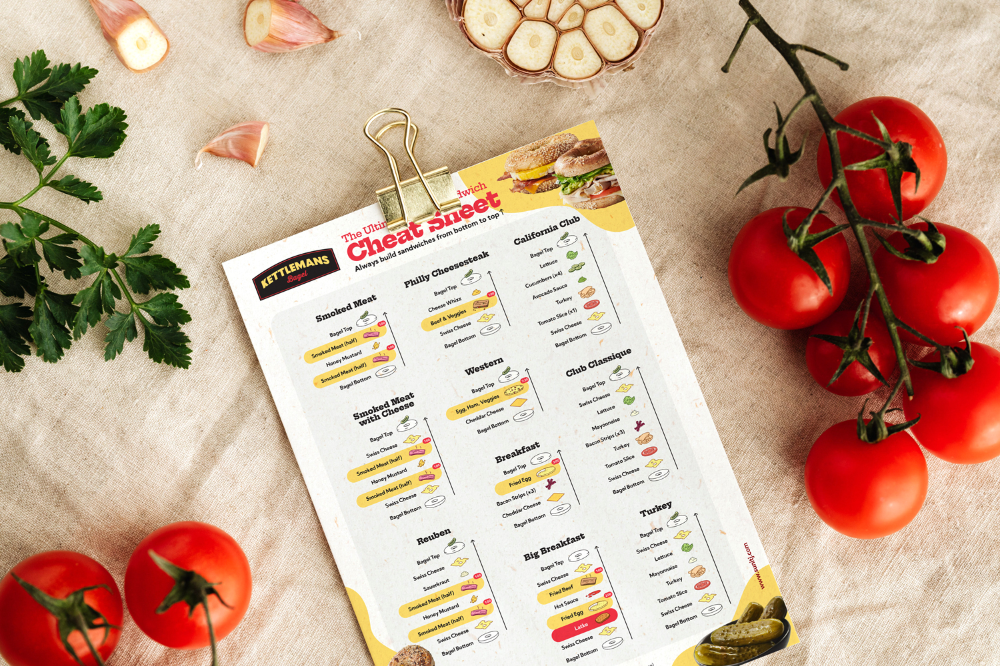

The Bagel Cheat Sheet
As a team member at Kettleman's Bagel, a key responsibility is working the Deli Line to craft their popular bagel sandwiches. Managing multiple orders can be overwhelming for new team members, as it takes experience to juggle kitchen tasks efficiently to make a good sandwich.
Problem:
The current sandwich build-guide used by Kettleman's team members is long, ambiguous & inconvenient to refer to especially while handling food and kitchen tasks.
Solution:
A one-page visual guide deconstructing sandwiches and highlighting items as required, making it easier for team members to refer to with speed & efficiency.
Tools:
- Adobe Illustrator
- Adobe Photoshop
- Chrome DevTools
My Role:
- UX Research
- Art Direction & Graphic Design
- Illustration
Timeline:
- Research: 2 weeks
- Concept: 2-3 days
- Final Design: 1 week
Research:

Existing Guide
I conducted a simple verbal survey with team members to understand their experience with the current sandwich guide - Most were frustrated about the lack of clarity.
Having to flip the pages of the existing guide after removing gloves to check for a specific item is tedious.
The existing guide was eventually ignored by team members who preferred to consult with experienced team members, who are not always available.
"Working on the Deli Line makes me anxious and the existing sandwich guide makes it worse!"
"It's wasteful to change my gloves so often just to check if the Turkey sandwich has mayo or pesto sauce."
"Training new team members takes so long & I can't always be available to clarify processes."
Design:
Analysing team members' concerns and taking inspiration from the Kettleman's website - their brand colours, imagery and fonts, I proceeded to design a guide that can be stuck on a surface for easy reference.




Features:

The sandwiches in the Cheat Sheet are deconstructed and portrayed visually in the order it’s meant to be built in.
This helps team members follow the right order, track their progression in the build, as well as clarify the amount of Swiss Cheese, Tomatoes, Bacon, etc. required for each sandwich.

Deli items in sandwiches that need to go into the Egg Cooker or the Oven are highlighted so that team members know what items to prioritize before they start slicing the bagel or building the sandwich.
The time taken for items to cook in the Egg Cooker are also mentioned in the corner of the highlighted item.

Since all 21 sandwiches couldn’t fit on one page, I grouped them by preparation method: one page for sandwiches made with an egg cooker and another for those requiring an oven. This makes it easier to find the right sandwich, and the pages can be placed near the respective equipment for quick reference.

Thank you for scrolling till the end.